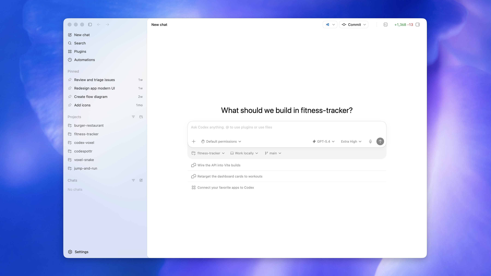
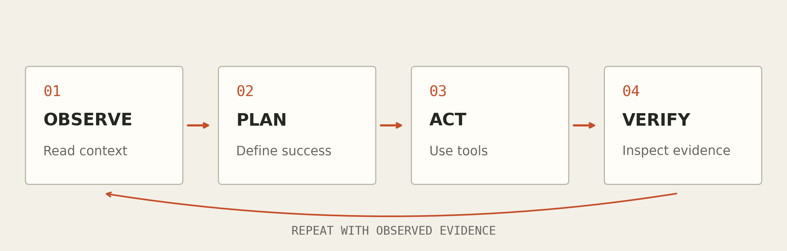
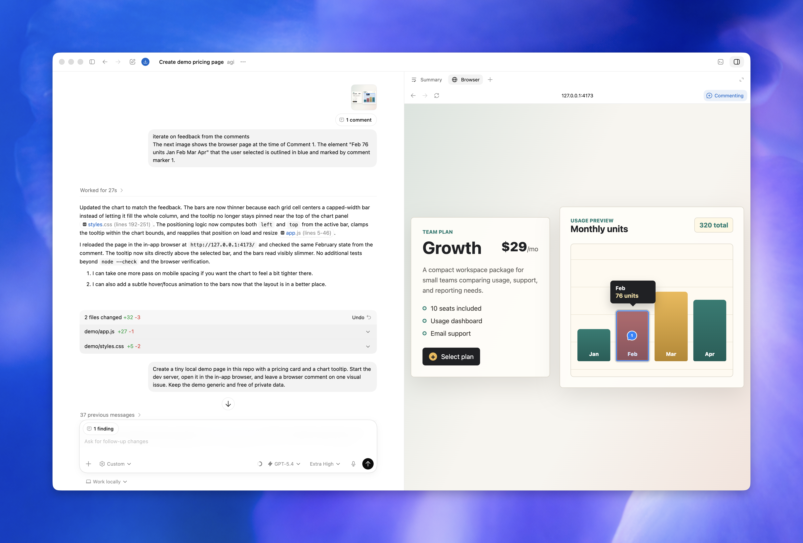
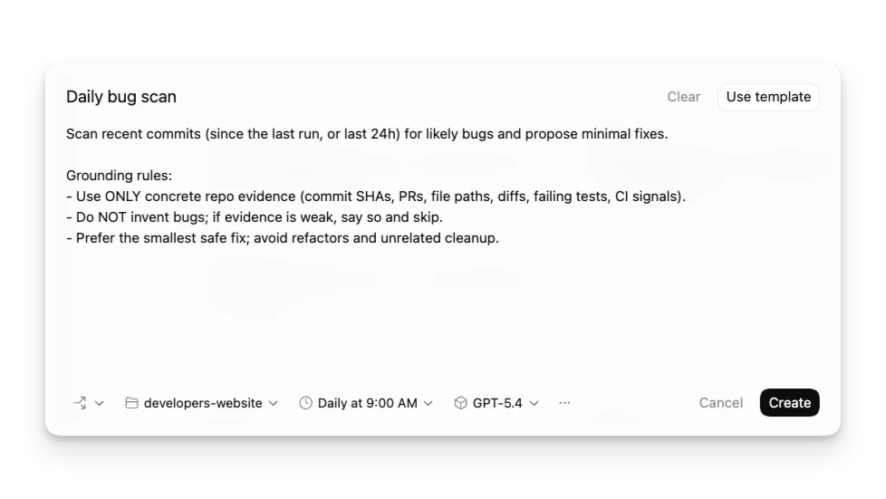

使用 Codex，
完成實際任務。
從任務描述、工具操作與成果驗證開始，
進一步建立 Skill、自動化流程與研究工作流程。
第一次接觸？從第一章依序閱讀。
已經開始使用？從左側找到你現在要解決的問題。
研究用例：LaTeX 計畫書 · 歷年報告 · PDF 洞見 · S2 論文搜尋
把第一個任務說清楚
從一個小而可驗收的任務開始，建立你與 Agent 的共同工作方式。
看懂 Codex 主視窗

左側 Projects 是專案入口；中央輸入框用來交代任務；框下方可確認專案、執行位置與 Git 分支。先確認工作範圍，再送出第一個任務。
開啟原尺寸圖 ↗ · 來源：OpenAI 官方更新紀錄 ↗版本：2026 年官方更新紀錄。模型、選單名稱與位置依安裝版本而異。選擇專案資料夾，先讓 Codex 閱讀現況，再提出變更。桌面 App、CLI 與 IDE 擴充是不同入口；實際選單與可用工具會依版本及帳號而異。
- 打開工作目錄。選擇你要處理的專案，確認檔案範圍。
- 先理解，再修改。請它說明入口、執行方式與現有約束。
- 給一個具體成果。例如修正表單的錯誤提示，並交代完成條件。
- 看證據。檢查 diff、測試結果或畫面，針對觀察到的問題繼續對話。
請先閱讀這個專案，說明如何啟動與主要檔案。
接著修正聯絡表單：空白 email 送出時顯示明確提示。
完成條件：鍵盤可操作、手機不溢出，並驗證成功與失敗情境。
完成後列出修改檔案、驗證結果與尚未解決的問題。理解它如何把話變成行動
模型負責判斷，工具負責執行，環境決定能讀寫什麼。
Agent 由模型、工具、上下文與回饋迴圈組成。模型會根據目前資訊選擇下一步；工具執行檔案讀寫、指令或瀏覽器操作，再把結果交回模型。

開啟高解析度流程圖 ↗四個會影響結果的條件
- Context：任務描述、讀取的檔案與工具結果；有限的上下文需要聚焦。
- Tools：終端機、搜尋、檔案與可用連接器。能否使用取決於目前環境。
- Permissions：檔案、網路與執行限制會影響可完成的操作。
- Evidence：測試、截圖、HTTP 回應或可重現的產物。
請先確認目前可用的工具、工作目錄與限制。
每次變更後，以實際結果判斷是否達成目標。
如果工具失敗，說明具體原因與可行替代方案。用驗收條件推進對話
讓需求可以被檢查，後續修正就有依據。
對照真實對話與成果畫面

左側可閱讀任務、回覆與修改檔案；右側 Browser 顯示實際頁面。選取畫面中的問題並加上註解，再檢查修改結果。
開啟原尺寸圖 ↗ · 來源：OpenAI 官方更新紀錄 ↗版本：2026 年官方更新紀錄。模型、選單名稱與位置依安裝版本而異。「讓網站好看」很難判定完成。改成「讓 390px 手機畫面不產生水平捲動、內文易讀、主要按鈕可見」，就能用畫面與測量回饋。
把大任務切成可觀察的里程碑
先完成一條可用流程，再補內容與視覺。遇到錯誤時提供實際訊息、重現步驟與預期結果；需要保留既有行為時，直接指出不能改動的範圍。
目標：建立一頁式課程網站。
背景：讀者是第一次接觸 AI Agent 的大學生。
邊界：純靜態網站，不加入登入與付費服務。
驗收：手機可讀、每章有範例、所有章節連結可用。
先做完整可用的一版，再依瀏覽器畫面修正。讓 AGENTS.md 保存工作約定
把跨任務都適用的規則，留在專案裡。
Codex 會讀取 AGENTS.md 作為持續指引。全域規則可以放在 Codex home；專案規則沿專案根目錄到目前工作目錄的路徑載入，較近的指引可以覆寫較早內容。
寫什麼最有幫助？
記錄真正需要遵守的執行方式、目錄慣例與完成條件。規則保持簡短，能由程式檢查的格式問題交給既有工具。
# 專案工作約定
- 內容使用繁體中文。
- 網站為純 HTML / CSS / JavaScript。
- 連結與素材使用相對路徑，以支援 GitHub Pages。
- 修改後檢查手機與桌面畫面。
- 回報變更、驗證方式與未完成項目。
- 憑證不得寫入程式碼或提交到 Git。把重複工作封裝成流程
一個 Skill 聚焦一件事，清楚說明何時用、輸入什麼、產出什麼。
Skill 以資料夾中的 SKILL.md 描述可重複的工作流程。必要 metadata 是 name 與 description；可依需求增加 scripts、references 與 assets。
├── SKILL.md
├── references/review-checklist.md
└── scripts/（需要確定性操作時再加入）
漸進揭露，減少上下文負擔
系統先看到名稱與描述，選用時才讀完整說明。description 應明確界定觸發情境；長參考資料另存檔案，需要時再讀。
在 Codex CLI 或 IDE 可用 $skill-name 明確指定。專案 Skill 可放 .agents/skills，個人 Skill 可放 ~/.agents/skills。不同宿主的選取介面可能不同。
驗證 Skill 的三種提示
- 正例：「檢查這個網站的手機畫面」應觸發。
- 反例：「摘要這篇文章」不應觸發。
- 缺少資料：「檢查網站」應先確認網址或專案。
---
name: site-review
description: 檢查指定網站的桌面與手機呈現。用於網站視覺審查；不處理文章摘要。
---
1. 確認要檢查的網址與主要使用流程。
2. 使用可用瀏覽器開啟，檢查文字、圖片、導覽與窄螢幕。
3. 記錄實際觀察到的問題與證據。
4. 有原始碼修改授權時修正，重新檢查。
5. 回報已修正項目與無法驗證的限制。先跑通一次，再交給排程
排程決定何時開始，Skill 決定怎麼完成。
認識排程設定畫面

上方寫每次執行的任務；下方確認專案、執行頻率與模型，最後才建立排程。先手動跑通同一份指令，再設定重複執行。
開啟原尺寸圖 ↗ · 來源：OpenAI 官方更新紀錄 ↗版本：2026 年官方更新紀錄。模型、選單名稱與位置依安裝版本而異。桌面排程可以使用本機專案或隔離的 worktree；需要本機檔案時，電腦必須開機且 App 持續執行，專案也必須存在。網頁任務不能直接操作你電腦上的資料夾。
適合本機專案維護、檔案分析。確認執行環境及權限。
適合 push 觸發建置與部署。在雲端 runner 執行，憑證放 Secrets。
將自動化寫成工作契約
定義來源、時間範圍、允許的操作、輸出與通知條件。先手動驗證提示詞，觀察前幾次執行，再調整頻率。
每個工作日上午 9 點（Asia/Taipei），檢查這個專案最近 24 小時的變更。
產出一份含來源連結、影響與待辦的摘要。
只讀取資料，不對外發送、不修改程式碼。
沒有新變更時保持安靜；需要我處理時才通知。
先在一般任務測試一次，再建立排程。從一個網址，理解部署路徑
知道檔案怎麼到讀者手上，才知道問題發生在哪裡。
- Git / Repository
- 儲存版本歷史。Commit 是一組變更的快照；Push 將它送到遠端。
- CI / CD
- 持續整合與部署。由事件觸發工作，例如 push 後打包靜態檔案並發布。
- DNS / HTTPS
- DNS 把網域名稱解析成網路位置；HTTPS 保護瀏覽器與服務之間的傳輸。
- Static hosting
- 直接提供 HTML、CSS、JS 與圖片。瀏覽器內的 JavaScript 是公開內容，不能保存秘密金鑰。
- API / MCP
- API 是程式服務介面；MCP 是讓 Agent 與外部工具、資料來源整合的協定。是否能用仍取決於連線與權限。
最常見的子路徑問題
專案網站通常位於 /repo-name/。/assets/a.png 指向網域根目錄，assets/a.png 才會相對目前頁面載入。部署到專案子路徑時，使用相對路徑連結素材。
請將這個靜態專案部署到 GitHub Pages。
使用 Actions 建置與部署，確保子路徑中的圖片與 CSS 正確。
憑證透過環境變數使用，不寫入遠端 URL 或檔案。
最後確認公開網址、資源載入與瀏覽器畫面。讓每次發布，都成為下一次的證據
研究、生成、部署、審查；用觀察到的問題決定下一輪。
- 查證：搜尋官方文件，記錄來源、日期及環境差異。
- 規劃：選一個讀者能完成的任務，定義完成條件。
- 產製：撰寫內容、產生示意圖，截圖需區分實拍與示意。
- 部署：檢查公開檔案與素材，提交版本並發布。
- 審查：開啟公開網站，檢查可讀性、導覽、互動與圖片。
- 修正：只針對具體發現更新，重新部署並確認。
什麼時候停止這一輪？
主要閱讀流程可用、素材正常、發現的阻塞問題已修正，且剩餘限制已記錄，就可以交付。後續新內容與新問題再啟動下一輪。
請檢查已部署網站的真實畫面。
依序驗證：主頁、目錄、章節、複製範例、手機版。
記錄具體問題，修正後重新部署。
通過本輪完成條件時交付網址及驗證紀錄。把研究構想，編成可交付的 PDF
提供徵件規範與研究資料，讓 Codex 編輯 LaTeX、編譯，再逐頁檢查。
適合國科會計畫書草稿、研究報告、論文與技術文件。Codex 可以在具備 LaTeX 編譯工具的環境中編輯 .tex、管理 .bib 引用並輸出 PDF；若缺少編譯器，可先請 Codex 安裝工具並設定編譯環境。
當年度徵件簡章、指定表格或版型、研究構想、已核實文獻、圖表與頁數限制。
LaTeX 原始碼、參考文獻、圖表、編譯後 PDF，以及格式檢查與待補資料清單。
- 先讀簡章與版型，列出章節、字型、頁面及附件要求。
- 依你提供的研究事實撰稿；未提供的數據與文獻標示待補。
- 使用支援中文的編譯方式，例如已安裝的 XeLaTeX，修正編譯錯誤。
- 把 PDF 轉成頁面圖片，檢查溢出、表格、圖片、引用與頁數。
請閱讀我提供的國科會當年度徵件簡章與版型，先整理格式檢核表。
根據 research-notes.md 編輯 LaTeX 計畫書，包含研究問題、文獻回顧、方法、時程與預期成果。
使用可用的中文編譯工具，輸出 proposal.pdf，保留 .tex、.bib 與圖表。
不得捏造文獻、初步數據或經費；缺少的資料標成「待補」。
編譯後逐頁檢視 PDF，修正版面並回報頁數、引用狀態與待補項目。查詢歷年計畫，建立報告資料庫
從研究主題與年度出發，整理計畫清單，再下載可公開取得的成果報告。
可請 Codex 分析國科會相關計畫查詢頁面，例如政府研究資訊系統 GRB，辨識搜尋條件、分頁、計畫詳目與報告連結。先確認資料來源及欄位，避免直接把搜尋筆數當成下載筆數。
- 定義範圍：主題、關鍵字、年度、主管機關與要蒐集的計畫類型；跨年度資料也要留意機關更名。
- 建立清單：保留計畫編號、名稱、主持人、機構、年度與詳目網址。
- 辨識全文狀態：區分可公開下載、限閱、尚未上傳及執行中的計畫。
- 下載與核對：僅下載網站允許取得的 PDF，確認檔案可開啟、題名與計畫相符，並以編號去重。
- 留下紀錄：輸出索引、來源網址、取得日期、檔名及失敗原因；再次執行只處理缺漏項目。
請分析 GRB 的研究計畫查詢流程，查找 2020–2025 年「生成式 AI 教育」相關國科會計畫。
先用一小批資料確認欄位與下載方式，再整理搜尋範圍內的結果。
建立 reports/index.csv，包含計畫編號、題名、主持人、機構、年度、詳目網址、PDF 網址、下載狀態與檔名。
只下載公開且網站允許取得的成果報告 PDF 到 reports/pdf/；按計畫編號去重。
限閱、未上傳、無法下載或網站維護時保留狀態，不把它算成已取得全文。
回報找到的計畫數、成功 PDF 數與尚缺全文清單。從一疊 PDF，找出有證據的洞見
把摘要提升為跨文件比較，讓每一個重要結論都能回到來源頁面。
可用於整理歷年計畫的方法、資料集、成果、限制與後續研究方向。先確認 PDF 能否抽取文字；掃描檔需要 OCR，圖表與複雜排版仍需回到頁面影像核對。
先建立證據表，再提出洞見
研究問題、方法、樣本、衡量指標、主要成果、限制；記錄檔名與 PDF 頁碼。
比較共同方法、重複限制、尚缺證據與可延伸的研究問題；區分事實及推論。
例如「多份報告都提到跨場域驗證不足」可以成為研究缺口候選；仍須指出哪些報告、哪幾頁支持這個判斷。不同資料集、樣本或衡量方式下的數字，不能直接當成同一排行榜。
請分析 reports/pdf/ 內的成果報告，先列出檔案數、可讀性與需要 OCR 的文件。
建立 evidence.csv：每份報告的研究問題、方法、樣本、指標、成果、限制、檔名與 PDF 頁碼。
再寫 insights.md，提出 5 個跨文件洞見、互相矛盾的發現與 3 個可研究的缺口。
每個結論都附檔名及頁碼，區分「報告明述」「跨文件推論」「待驗證假說」。
頁碼使用 PDF 第幾頁；如與印刷頁碼不同，兩者並列。
缺漏資料標示未知，不推測補齊；抽查重要引文與圖表原頁。用 Semantic Scholar API，擴展文獻脈絡
以可重現的檢索式蒐集候選論文，再核對摘要、識別碼與全文來源。
S2 指 Semantic Scholar。Academic Graph API 提供論文搜尋與書目資料；可要求題名、作者、年份、摘要、引用數、外部識別碼及開放全文連結等欄位。它能協助找文獻，不代表每篇都附全文。
- 把研究問題拆成英文關鍵字、同義詞與年度範圍，保存檢索式。
- 呼叫搜尋端點，使用
fields指定欄位，依回應處理分頁。 - 以 DOI 或 paperId 去重，記錄納入與排除理由；不能只用引用數判斷品質。
- 若有 API key，從環境變數讀取並透過
x-api-key傳送；遇到 429 時退避重試並限制頻率。 - 核對候選論文原始頁面；摘要或 openAccessPdf 可能為空，全文連結也不保證可下載。
GET https://api.semanticscholar.org/graph/v1/paper/search
?query=retrieval%20augmented%20generation%20education
&year=2020-2025
&limit=20
&fields=title,year,authors,abstract,externalIds,citationCount,openAccessPdf,url將 API 請求交給 Codex 編寫成檢索程式，保存結果與檢索紀錄。引用前，核對題名、作者、年份與 DOI。
請使用 Semantic Scholar Academic Graph API，搜尋 2020–2025 年 RAG 與教育相關論文。
先提出英文檢索式與納入／排除條件，再以 paper/search 取得候選資料並處理分頁。
保留 paperId、題名、作者、年份、摘要、DOI、引用數、來源網址與 openAccessPdf。
API key 若需要，從 S2_API_KEY 環境變數讀取，不寫進程式碼或輸出。
處理 429、缺漏欄位與重複資料，輸出 papers.json、literature.csv 和檢索紀錄。
核對最相關 10 篇的書目及摘要，解釋相關性；沒有全文時明確註明。設定環境，安裝需要的程式
交代要完成的工作，讓 Codex 檢查缺少的工具、安裝套件並驗證能否執行。
除了編輯檔案，Codex 也能在具備執行權限與網路存取的環境中安裝程式、設定開發工具及處理相依套件。先指定要設定的電腦或執行環境，再說明需要跑通的任務。
安裝 Python 或 Node.js、建立虛擬環境、安裝專案套件、設定 PATH，啟動程式或 Notebook。
安裝 LaTeX 編譯工具與中文字型、準備 PDF 文字擷取或 OCR 工具，測試文件是否能產出。
- 檢查現況：確認作業系統、CPU 架構、現有版本與專案相依需求。
- 安裝缺少的工具：使用官方來源或套件管理器，沿用專案指定的版本與鎖定檔。
- 設定執行環境：建立隔離環境，設定路徑、環境變數與必要的設定檔。
- 實際驗證：檢查版本、匯入套件、執行範例，最後跑通真正要做的工作。
- 保存重建步驟：記錄安裝指令、工具版本與設定位置，方便換電腦或建立新環境。
例如：準備中文 LaTeX 編譯環境
指定作業系統與要編譯的文件，請 Codex 檢查編譯器、中文字型及套件；完成安裝後，以含中文、引用和圖片的最小文件測試，再編譯正式計畫書。
讓新 worktree 自動完成設定
在桌面 App 的 Codex 本機環境設定中，加入相依套件安裝與初始建置的 setup script；也可設定啟動服務或執行測試的常用 action。
請幫這個專案設定可執行的環境。
先檢查作業系統、CPU 架構、已安裝工具與專案需求，列出缺少的項目。
使用官方來源或套件管理器安裝所需程式與相依套件，優先使用專案隔離環境。
設定必要的 PATH 與環境變數；金鑰從環境變數或憑證管理工具讀取，不寫入版本控制。
遇到管理員權限或必須由我完成的安裝步驟，指出具體操作。
完成後檢查版本、執行最小範例及專案啟動流程。
把安裝方式、版本、設定位置與重建步驟記錄在 README。官方文件與資料來源
操作選單、可用工具與方案限制，以安裝版本及帳號設定為準。詳細規則可查閱以下官方文件。
01 官方 Quickstart ↗02 Build skills ↗03 AGENTS.md 指引 ↗04 Scheduled tasks ↗05 GRB 報告全文服務說明 ↗06 Semantic Scholar Academic Graph API ↗07 本機環境設定 ↗圖片來源：Codex 介面截圖／OpenAI 官方更新紀錄；封面插畫／AI 生成；流程圖／概念示意。